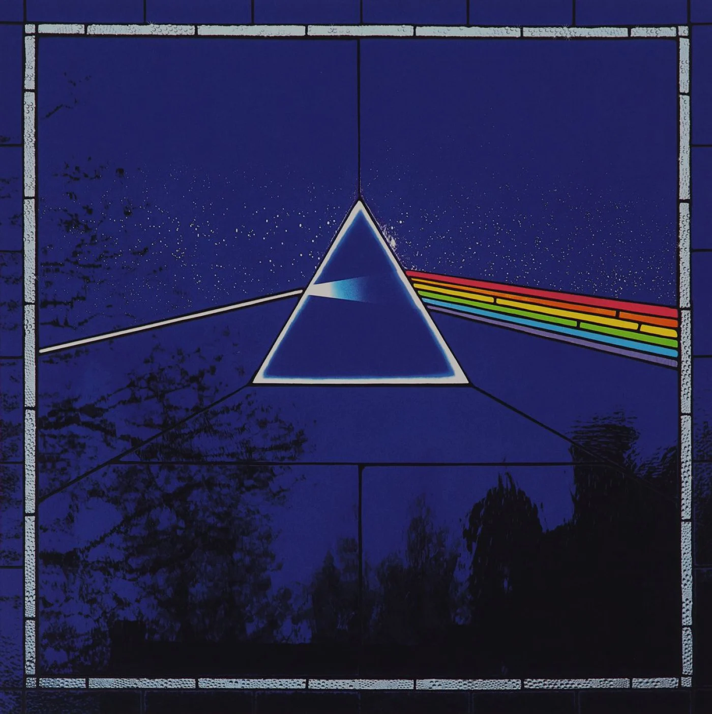
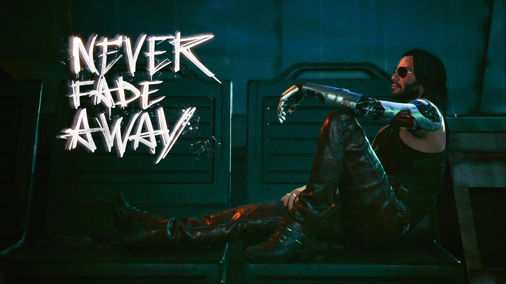
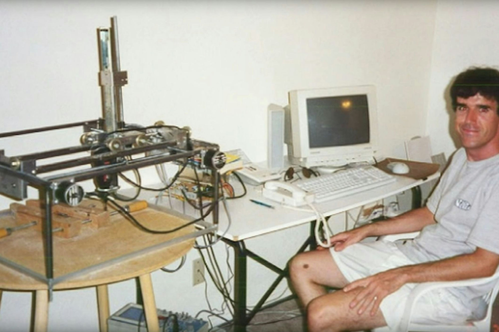

sidharthify@nixos
~
$
hyfetch
sidharthify@nixos
-----------------
OS: NixOS 26.11 (Zokor) x86_64
Kernel: Linux 7.0.11-cachyos
Display (MSI G255F): 1920x1080 in 24", 165 Hz [External]
DE: KDE Plasma 6.6.5
Font: Inter (10pt) [Qt], Inter (10pt) [GTK2/3/4]
CPU: 12th Gen Intel(R) Core(TM) i5-12400F (12) @ 4.40 GHz
GPU: AMD Radeon RX 9060 XT [Discrete]
Memory: 8.51 GiB / 15.45 GiB (55%)
Disk (/): 583.49 GiB / 915.32 GiB (64%) - ext4
there is no dark side to the moon, really. matter of fact, it's all dark.
sidharthify@nixos ~ $ cat about.md
i like low level systems and embedded programming. i tinker with android (aosp) and linux. i run nixOS on my main PC. i occasionally ship roms, write bash scripts and live in the UNIX terminal.
sidharthify@nixos ~ $ ls ~/projects
- yaap (yet another aosp project)maintainer / contributor
- cipherOSmaintainer
- device trees & portsnothing phone 2a/2a+, realme 8i / narzo 50 4g, realme 9 5g SE, pixel 7 / 7 pro — maintainer, co-lead, contributor, tester
- lineageos contributionsrewriting legacy hidl hardware abstraction layers to aidl, building kernels
- nixos + homelabself-hosted plex, radarr, sonarr, prowlarr
- cwr engine port (arma cwa)ported a 20-year-old game engine to android arm64 with a custom opengl es 3.2 backend
- sydlightweight command-line tool for nixOS
- breatheandroid app designed to monitor real-time AQI across Jammu & Kashmir
sidharthify@nixos ~ $ ls ~/skills
- c & modern c++engine rendering backends, kernelspace c, aosp c++, custom math libraries
- python and bashfile manipulation and some scripting
- graphics programming & glslopengl es 3.2, custom vertex/fragment shaders, rewriting fixed-function pipelines
- gitgeneral knowledge and familiarity
- linuxgeneral commandline knowledge
- aospdevice trees, HALs (aidl/hidl), soong, android.bp, overlays, fastboot, adb
- nix/nixOSflakes, the distro and the nix language itself
- css/html/javascriptenough to make this website, and contributions to yaaprom.org. no frameworks
- kotlinandroid frameworks
sidharthify@nixos
~
$
type help to look around. try ls, projects, cat about.md, cd blog.
things i love


